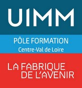

Bourges · 8 octobre, 11, 17 et 18 décembre 2026 · Pôle Formation UIMM CVDL · S. Jaubert
Fil rouge : partir de ce que les stagiaires savent du travail, leur apprendre à voir le flux et les gaspillages, puis à agir dessus. Les jeux de simulation sont réservés à décembre.
Comprendre l'entreprise, confronter les métiers, apprendre à voir les gaspillages. Cas commun : l'affaire BT-200 chez CMY.
Retour sur les missions d'observation. Pistes : Jeu du Lean Manufacturing, Jeu du Kanban, Jeu du Kaizen.
À définir.
À définir. Bilan du parcours.
12 demandeurs d'emploi en parcours métier PRF. Horaires supposés : 9 h 00 à 12 h 30 et 13 h 30 à 17 h 00 (à confirmer).
| Repère | Filière | Entreprise renseignée | Binôme du matin | Équipe |
|---|---|---|---|---|
| C1 | Chaudronnerie | oui | T1 | 1 |
| C2 | Chaudronnerie | T2 | 1 | |
| C3 | Chaudronnerie | T3 | 2 | |
| C4 | Chaudronnerie | O1 | 2 | |
| C5 | Chaudronnerie | O2 | 3 | |
| O1 | ORMOCN | C4 | 1 | |
| O2 | ORMOCN | oui | C5 | 2 |
| O3 | ORMOCN | oui | T4 | 3 |
| T1 | TMI | C1 | 1 | |
| T2 | TMI | C2 | 2 | |
| T3 | TMI | C3 | 3 | |
| T4 | TMI | O3 | 3 |
ORMOCN : opérateur régleur sur machine-outil à commande numérique. TMI : technicien de maintenance industrielle. Binômes et équipes : proposition à ajuster selon les présents.
Cette page est publiée : aucun nom n'y figure. La correspondance entre repères et stagiaires est dans _PRIVE_correspondance_stagiaires.html, exclu de la publication par le fichier .gitignore du dépôt.
| Horaire | Séquence | Ressources |
|---|---|---|
| 9 h 00 | 1. Accueil et cadre Le parcours, trois règles pour débattre. | Diapos 1 à 3 |
| 9 h 20 | 2. Interview croisée Chacun présente l'entreprise de son binôme. On place les entreprises sur une carte à deux axes. | Diapos 4 et 5Grille d'interviewAffiche des deux axes |
| 10 h 35 | Pause | |
| 10 h 50 | 3. Ligne de désaccord Quatre affirmations, une en réserve. On se place, on argumente. | Diapos 6 à 10Affiches D'accord / Pas d'accord |
| 11 h 35 | 4. Qu'est-ce qu'une entreprise ? Le crayon, les fonctions, le classement des 12 entreprises, les typologies de production, présentation de CMY. | Diapos 11 à 16Cartes des 12 entreprises |
| 12 h 30 | Déjeuner | |
| 13 h 30 | 5. Ce qui crée de la valeur Estimation individuelle sur post-it, les 8 gaspillages. | Diapos 17 et 18Mémo des 8 gaspillages |
| 13 h 50 | 6. Cas CMY · FT1 La chasse aux gaspillages dans la journée de Lucas. | Diapo 19Dossier P1 à P3, FT1 |
| 14 h 35 | 7. Cas CMY · FT2 Chacun défend un personnage d'un autre métier, puis Ishikawa 5M et débat « qui a le plus raison ? ». | Diapo 20Dossier P4, FT2Affiche Ishikawa |
| 15 h 30 | Pause | |
| 15 h 45 | 8. Cas CMY · FT3 Classement des heures perdues, temps réellement utile d'un bâti. | Diapo 21Dossier P5, P6, FT3 |
| 16 h 10 | 9. Cas CMY · FT4 Trois actions présentées au directeur (joué par le formateur). | Diapo 22FT4 |
| 16 h 45 | 10. Bilan et mission d'observation | Diapos 23 et 24Fiche mission |
Idée directrice de la journée. Le matin, chacun parle de son poste. L'après-midi, le cas montre que le plus gros problème de CMY n'est dans aucun métier : il est entre la soudure et l'usinage. Chacun connaît son poste, personne ne regarde le flux.
| Document | Pour qui | Usage | Impression |
|---|---|---|---|
| Fiche de conduite | Formateur | Déroulé minuté, consignes mot à mot, relances, pièges, liste de préparation | 1 ex. |
| Diaporama | Projeté | 24 diapositives. Flèches du clavier pour naviguer, touche F pour le plein écran | Non |
| Fiches stagiaires | Stagiaires | Grille d'interview, mémo des 8 gaspillages, mission d'observation | 3 pages × 12 |
| Affiches | Salle | D'accord, Pas d'accord, carte des entreprises, Ishikawa | A4 et A3 paysage |
| Dossier de cas CMY | Stagiaires | Affaire BT-200 : 6 pièces (P1 à P6) et 4 feuilles de travail (FT1 à FT4) | 11 pages × 3 |
| Corrigé du cas CMY | Formateur | Chaque réponse renvoie à sa pièce et à sa page du dossier | 1 ex. |
Hors programme, à utiliser au choix. Cinq activités papier et calculatrice, autour d'une entreprise inventée (ADS). Chacune vise une erreur de raisonnement : A1 le choix du critère (chaudronnerie), A2 hypothèse ou cause démontrée (usinage CN), A3 la qualité des catégories GMAO (maintenance), A4 le tri des causes d'un Ishikawa, A5 taux contre parts du total (trois métiers).
| Document | Pour qui | Usage | Impression |
|---|---|---|---|
| Dossier stagiaire | Stagiaires | Page de garde et cinq activités (A1 à A5), chaque activité imprimable séparément | 16 pages, selon les activités retenues |
| Guide formateur et corrigé | Formateur | Deux scénarios d'enchaînement, déroulé par activité, corrigé avec renvoi à l'activité, la page et la question | 1 ex. |
Hors programme, à utiliser au choix. Cinq activités papier et calculatrice chez ADS, avec un mémo TRS (cascade des temps et formules). Chacune montre une situation où un TRS bien calculé trompe : B1 classement des événements et jugement de l'opérateur (presse plieuse, chaudronnerie), B2 temps de cycle de référence faux (centre d'usinage, usinage CN), B3 micro-arrêts non déclarés et reclassement des arrêts (cellule robotisée, maintenance), B4 le TRS et la machine qui limite le flux, B5 moyenne de TRS et point de cinq minutes (trois métiers).
| Document | Pour qui | Usage | Impression |
|---|---|---|---|
| Dossier stagiaire TRS | Stagiaires | Page de garde, mémo TRS et cinq activités (B1 à B5), chaque activité imprimable séparément | 13 pages, selon les activités retenues |
| Guide formateur et corrigé TRS | Formateur | Enchaînement conseillé, corrigé avec renvoi à l'activité, la page et la question, points à vérifier | 1 ex. |
Hors programme, ressource pour la suite du parcours. Cinq activités papier et calculatrice chez ADS, avec un mémo SMED (définition du temps de changement, interne et externe, étapes). S1 séparer interne et externe sur la presse plieuse (chaudronnerie), S2 le temps de changement caché : essais, rebuts, prudence (centre d'usinage, usinage CN), S3 changement de posage, sécurité et retour sur investissement (cellule robotisée, maintenance), S4 capacité ou petits lots : que faire des minutes gagnées, S5 changer à deux et rédiger le standard (trois métiers).
| Document | Pour qui | Usage | Impression |
|---|---|---|---|
| Dossier stagiaire SMED | Stagiaires | Page de garde, mémo SMED et cinq activités (S1 à S5), chaque activité imprimable séparément | 14 pages, selon les activités retenues |
| Guide formateur et corrigé SMED | Formateur | Enchaînement conseillé, corrigé avec renvoi à l'activité, la page et la question, points à vérifier | 1 ex. |
| Ressource | Utilisée pour |
|---|---|
| Cartes des 12 entreprises | Séquence 4, classement base, transformation, pointe |
| Pense-bête organisation industrielle | Séquence 4 (le crayon), séquence 5 (question de la valeur ajoutée) |
| Qu'est-ce qu'une entreprise | Séquence 4, définition |
| Qu'appelle-t-on industrie ? | Appui possible en séquence 4. À corriger avant de le distribuer : il contient une phrase de fin d'assistant IA et range l'aéronautique dans deux catégories. |
Pistes pour décembre : Jeu du Lean Manufacturing · Jeu du Kanban · Jeu du Kaizen
Plan_Formation_OI_08_Octobre.md est une version antérieure, vidée de ses données nominatives. Il peut être supprimé.| Date | Évolution |
|---|---|
| 6 octobre 2026 | Ajout d'une section SMED : cinq activités (dossier activites_smed), ressource pour la suite du parcours. |
| 6 octobre 2026 | Ajout d'une section TRS : cinq activités (dossier activites_trs), hors programme, adaptées aux trois filières du groupe. |
| 6 octobre 2026 | Ajout d'une banque de cinq activités Pareto et Ishikawa (dossier activites_pareto_ishikawa), hors programme, adaptée aux trois filières du groupe. |
| 30 septembre 2026 | Noms des stagiaires retirés des pages publiées, remplacés par des repères (C, O, T). Correspondance dans un fichier privé exclu du dépôt. |
| 30 septembre 2026 | Cartes des 12 entreprises corrigées sur place (00_lean_ss) : plus de couleurs ni de numéros qui trahissaient la réponse, cartes mélangées, étiquettes de catégorie à découper, répartition attendue visible à l'écran seulement. |
| 30 septembre 2026 | Création de la page. Journée du 8 octobre construite autour d'un cas commun (CMY, affaire BT-200). Atelier Cocotte retiré du parcours. Jeux réservés à décembre. |